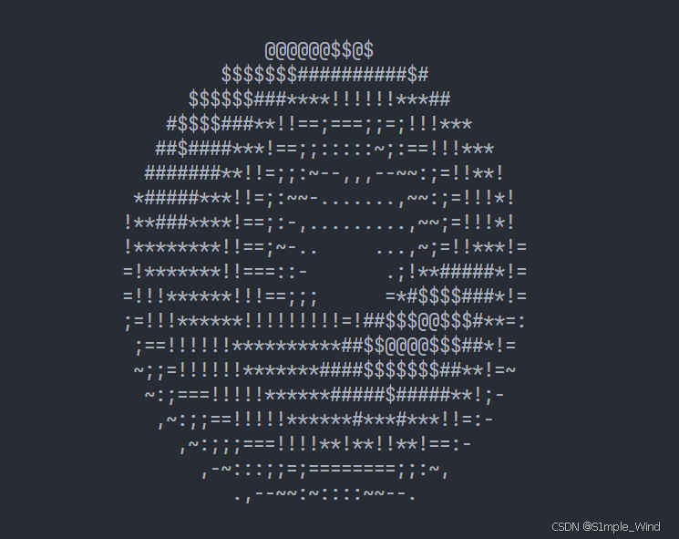
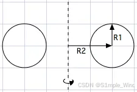
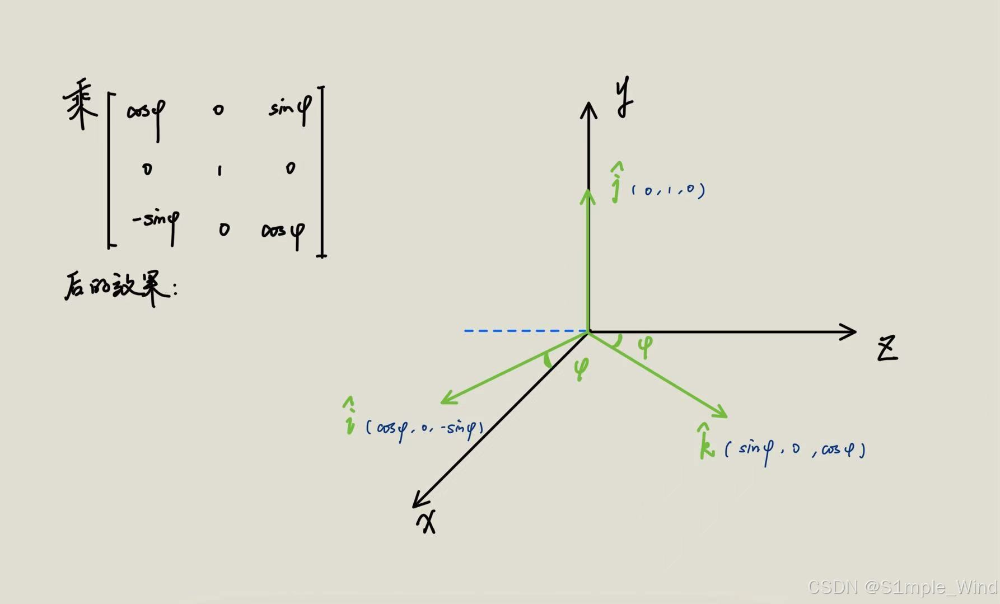
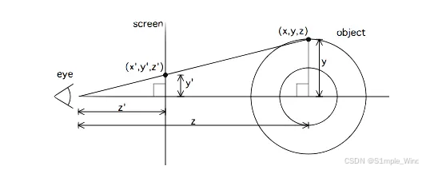

3D Donut
3D旋转甜甜圈算法
前言
敲代码的需不需要学好数学？
最近在网上看到了一个旋转甜甜圈的代码，我在这里适当翻译一下并简单解析总结一下背后的数学原理，感兴趣的小伙伴可以点击链接访问原网页（英文）：
donut.c without a math library
注：这里需要一点点的线性代数的知识
效果图

先贴源码
这是原始的代码，后面有注释版
1 |
|
在你的IDE里运行上面的代码，就能在终端里看到旋转的甜甜圈了~
背后的数学原理（简单分析）
拆分成以下几个步骤：
1. 创建圆
首先，在三维空间，在xOz平面里画一个半径为 R₁，圆心位于 (R₂,0) 的圆。这个圆其实是未来要生成圆环（torus，甜甜圈）的”母圆”，它会围绕某个轴旋转，进而生成一个三维的环形曲面。

而这个圆上点的坐标可以用一个角度$\theta$来表示：
2. 绕着Y轴旋转，生成立体的甜甜圈
通过让上一步的圆围绕 Y 轴旋转，就能生成一个三维的圆环（torus）。直观理解：就像你拿一个圆（比如硬币），把它绕着一条竖直的轴旋转一周，就得到一个甜甜圈形状。
这里我们通过乘一个矩阵的方式来实现绕Y轴旋转：
复习一下线性代数，简单解释一下乘这个矩阵的作用：
把这个3×3的矩阵拆分成三个向量
矩阵乘法的几何意义可以理解为将原本坐标系中的坐标轴的单位向量，替换为我们提供的新的向量；
比如这里原本坐标轴中的x,y,z轴的单位向量i,j,k，分别替换成上面的三个向量
达成的效果就是绕着Y轴顺时针旋转了$\phi$角度

3. 旋转甜甜圈（营造漂浮感）
同理，我们再乘两个矩阵，可以实现这个甜甜圈绕着x,z轴旋转，从而达到上下翻转、旋转这个甜甜圈的效果
绕x轴旋转A角度：
绕z轴旋转B角度：
4. 得到坐标的表达式
把刚刚所有步骤结合起来
圆环上某一点在局部坐标系下为：
绕三个轴旋转：
将矩阵相乘并展开后，可以得到旋转后的 3D 坐标 $(x, y, z)$：
5. 三维投影到二维（终端屏幕）
投影的背景知识
好的！现在我们有了这个甜甜圈的三维坐标！接下来要把三维坐标投影到二维平面上

以我们的视线是沿着z轴看向物体的视角为例，要想将物体投影到 屏幕 上，我们只需要对物体上每个点运用相似三角形进行一个缩放
以点（x,y,z）为例，由相似三角形得到
为了将 3D 坐标投影到 2D，我们将坐标按屏幕距离 $z’$ 缩放。因为 $z’$ 是固定常数，不是坐标的函数，我们将其重命名为 $K_1$，投影公式变为：
根据我们的窗口需求调整$K_1$。
当我们绘制大量点时，可能会出现不同点 投影到相同 $(x’,y’)$ 位置 但深度不同的情况，因此我们维护一个 Z-buffer，存储已绘制的每个点的 z 坐标。在绘制新点时，先检查该点是否在已有像素的前方。同时计算 $z^{-1} = 1/z$ 来进行深度缓冲更高效，因为：
- $z^{-1} = 0$ 对应无限远的深度，因此可以将 Z-buffer 初始化为 0，背景即为无限远；
- 计算 $(x’,y’)$ 时使用 $z^{-1}$ 比直接除以 z 更节省计算。
总结一下，要得到屏幕坐标，我们需要：
改变原始坐标系中物体与观察者的垂直距离（以观察者为原点），通过在 z 方向加常数实现($z => z + K_2$)
将 3D 坐标投影到 2D 屏幕。
设常数 $K_2$ 表示圆环离观察者的距离，结合原始的投影公式，最终公式为：
$K_1$ 和 $K_2$ 可以一起调节，改变视野或拉伸/压缩深度感。
6. 光照与明暗（着色原理）
本段代码是使用. , - ~ : ; = ! * # $ @这类字符来从明到暗模拟光线的效果，所以我们要给投影后的$(x’ , y’)$分配一个亮度。
至于亮度的计算，我们简单复习一下高中数学的内容：
对于每一个像素点，计算亮度需要表面法向量surface normal），它是垂直于表面的方向的一个向量。我们选定一个单位光源方向向量$\vec{l}$，使用单位法向量 $\vec{n}$ 就可以与光源方向向量 点乘，由于两个向量的模是1，点乘得到的就是光照余弦值：点积 >0 表示表面朝向光源，<0 表示背光。值越高，亮度越强。
而初始法向量就是一开始绘制的单位圆上的点 $\vec{n} = (\cos\theta, \sin\theta, 0)$。
上文所说的矩阵变换对它同样成立，对它做与顶点相同的旋转变换，得到法向量 $\vec{n}’ = (N_x,N_y,N_z)$。
与光照方向向量（例如 $(0,1,-1)$）做点积：
值越大表示越亮。
最后将亮度
按照划分的值的区间，映射到字符表，就能得到从暗到亮的渐变效果。
代码分析
这里只是个人的一些简单分析
概览
- 程序在每帧建立两个缓冲区：
b[1760]（字符帧缓冲）和z[1760]（深度缓冲，保存 inverse-depth）。 - 在两个参数角
i、j的离散网格上采样，对每个采样点：- 计算该点在 3D 空间的坐标（经过旋转 A、B）；
- 投影到屏幕并得到屏幕坐标 (x,y)；
- 计算该点的法向量与光源的点积（亮度），映射为字符索引；
- 用 z-buffer 判定是否覆盖并更新输出字符。
- 使用 ANSI 转义序列刷新终端，循环播放动画，
usleep(30000)控制帧率（约 33 FPS）。
逐块分析
头文件与主循环
1 |
|
A,B：代表绕$x,z$轴的两个旋转角，在每帧内会缓慢增加使甜甜圈旋转。z[1760]：深度缓冲，使用一维数组记录二维数据（长度 1760 = 80 × 22），表示终端宽 80 列 × 高 22 行（常见取值）。b[1760]：帧缓冲，记录每个位置要输出的 ASCII 字符。printf("\x1b[2J")：ANSI 转义，清屏一次（之后用\x1b[H回到左上角重写），防闪烁。
清缓冲与采样循环
1 | memset(b, 32, 1760); // fill char buffer with ' ' (ASCII 32) |
memset：用常量字节数量写死，假设float为 4 字节（在大多数平台上成立）。更健壮写法是memset(z, 0, sizeof(z))。- 角度步长：
j步长 0.07、i步长 0.02 —— 这是采样密度的折中：越小越细致但越慢。两重循环的采样点数大约为(2π/0.07)*(2π/0.02) ≈ 89 * 314 ≈ 27946个采样点/帧。
三角预计算与中间量
1 | float c = sin(i); |
把常用的 sin/cos 抽出来存到变量，减少重复计算（可读性变差但更短）。
c = sin(i),l = cos(i)（后面l出现）d = cos(j),f = sin(j)e = sin(A),g = cos(A)h = d + 2—— 这里h对应几何中R₂ + R₁ * cos(θ)的简化（在原实现中R₁=1, R₂=2）。也就是把环面”从原点移开”的那一项。
深度、旋转与投影
1 | float D = 1 / (c * h * e + f * g + 5); |
D：等于1/(something + 5)，它实际上是 inverse depth（即1/(z + K₂)），用来做 Z-buffer 和投影（用倒数可以使比较更简单并复用到 x’, y’ 计算中）。+5是把物体往画面内移动的常数（对应K₂），避免分母为 0。t：中间量，用于旋转组合（把 A、B 旋转与 i、j 的三角结果组合起来）。(x,y)：屏幕坐标。常数40、12是屏幕中心偏移（把中心放在列 40、行 12），30、15是水平/垂直缩放系数（把三维投影数值映射到字符格）。o = x + 80*y：把二维坐标映射成一维缓冲索引（行优先）。在使用o之前代码用条件保证o在有效范围内。
亮度计算与写入缓冲
1 | int N = 8 * ((f * e - c * d * g) * m - c * d * e - f * g - l * d * n); |
N是亮度索引（整数），等于大致8 * (L)，其中( ... )对应法向量与光照方向的点积（即亮度 L 的表达式）。乘 8 是为了把 -1..1 的亮度拉伸到索引范围。- ASCII 字符串
".,-~:;=!*#$@"按从暗到亮排序，用N作为索引选择字符。 - 条件
22 > y && y > 0 && x > 0 && 80 > x：判断屏幕范围（注意这里是严格>和<，会排除边界0与22/80，这是实现上的小瑕疵，但不会影响整体效果） - 使用
D > z[o]：因为z保存的是以前写入位置的 inverse-depth，D越大表示越近（depth 小），所以D > z[o]表示当前点更靠近观察者，应覆盖旧像素。
输出与旋转步进
1 | printf("\x1b[H"); |
printf("\x1b[H")：把光标移动到左上角（这样不必清屏，直接重写实现动画）。- 输出循环有个技巧写法
putchar(k % 80 ? b[k] : 10);：当k % 80 == 0时输出换行（ASCII 10），否则输出b[k]。注意循环用到k < 1761，因此最后一次k==1760时k%80==0，将输出一个换行，这样整帧输出 22 行后再输出最后换行。 - 在打印每个字符时 更新
A和B（每个字符递增很小的量），这是一种”压缩代码”的技巧：一次完整的帧打印会把A增加0.00004 * 1760 = 0.0704，B增加0.00002 * 1760 = 0.0352。所以每帧的实际角速度就是这些乘积。 usleep(30000)：每帧暂停 30ms，约 33 帧/秒。
改进版示例（带英文代码注释，保留原逻辑但更健壮）
下面给出一个更清晰、稍微修正一些细节的示例（注释用英文）。这个版本：
- 使用
sizeof替代硬编码字节数：memset(z, 0, sizeof z);避免了对 float 大小的假设。 - 对亮度做了 clamp：
N应当 clamp 到字符数组的有效下标（0..11）。否则可能越界。 - 改善了打印逻辑（按行输出，避免首行空行）；
- 把
A,B的每帧增量放到帧末（更直观；与原每字符累加最终每帧相同幅度）；
1 |
|